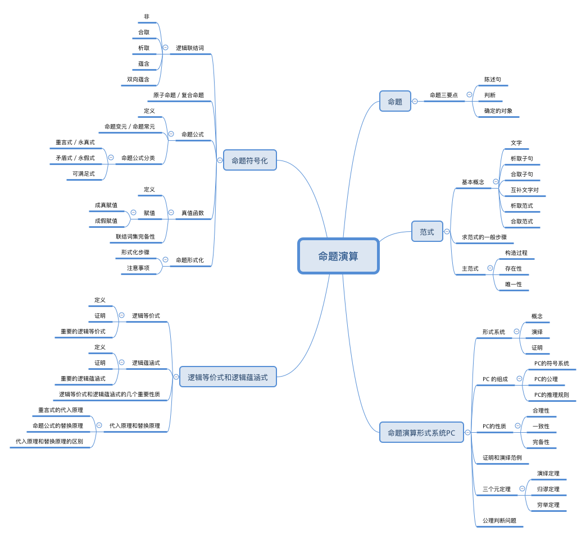

概览

命题
命题是数理逻辑中最基本的概念，就好像自然数对于算数一样。
对确定的对象作出判断的陈述句称作命题。 如果判断正确，称命题为 真，否则为 假。「真、假」是命题的属性，成为「真值」。
命题要符合三个条件：
- 必须是陈述句
- 要做出判断
- 要对确定的对象作出判断
自相矛盾语句的不能作为命题，例如「这句话是错的」。
命题符号化
逻辑联结词 是指，连接命题，对命题进行运算的词。原子命题 是不含有逻辑联结词的命题。复合命题 是包含了原子命题和逻辑联结词的命题。
原子命题一般用 $p$、$q$ 、$r$ 、$s$ 等小写字母表示。
逻辑联结词
逻辑联结词是数理逻辑中的运算符号，就好像数学运算中的「加、减、乘、除」一样。
常用的逻辑联结词有以下几种：
- 非：表示命题的否定。记作 $\lnot p$
- 合取：逻辑关系为两个命题同时成立，表示自然语言中「即…又…」、「不但…而且…」等并列的连接词。记作 $p\land q$
- 析取：逻辑关系为两个命题至少一个成立，表示自然语言中的「或」。记作 $p\lor q$
- 异或：有时自然语言中的「或」具有排斥性，例如「人固有一死，或重于泰山，或轻于鸿毛」这时就用异或表示，记作 $p\oplus q$ ，等价于 $(p\land\lnot q)\lor (\lnot p\land q)$
- 蕴含：逻辑关系是 $p$ 是 $q$ 的充分条件，或者说 $q$ 是 $p$ 的必要条件。记作 $p\rightarrow q$
- 双向蕴含：逻辑关系是 $p$ 和 $q$ 互为充分必要条件。记作 $p\leftrightarrow q$
- 或非：也称 Peirce 记号。在 $p$ 和 $q$ 均为假时为真，相当于 $\lnot (p\lor q)$
- 与非：在 $p$ 和 $q$ 均为真时为假，相当于 $\lnot (p\land q)$
以下是几种逻辑联结词的真值表：
| $p\qquad q$ | $\lnot p$ | $p\lor q$ | $p\land q$ | $p\oplus q$ | $p\rightarrow q$ | $p\leftrightarrow q$ | $p\mid q$ | $p\downarrow q$ |
|---|---|---|---|---|---|---|---|---|
| $T\qquad T$ | F | T | T | F | T | T | F | F |
| $T\qquad F$ | F | T | F | T | F | F | T | F |
| $F\qquad T$ | T | T | F | T | T | F | T | F |
| $F\qquad F$ | F | F | F | F | T | T | T | T |
命题公式
命题公式的组成：
- 命题常元：即具体的命题和 $\mathbf T\quad \mathbf F$
- 命题变元：以「真、假」为取值范围的变量
- 命题公式：由命题常元、命题变元和联结词组成的形式更为复杂的命题
命题公式的定义：
- 命题变元和命题常元是命题公式，特别的称为原子公式或原子
- 如果 $A$ ，$B$ 是命题公式，那么 $(\lnot A)$，$(A\land B)$，$(A\lor B)$，$(A\rightarrow B)$，$(A\leftrightarrow B)$ 也是命题公式
- 只有有限步骤引用上述两条所组成的符号串是命题公式
命题公式简称公式，采用大写 $A$，$B$ 等表示。
命题公式形式上是一个规则的字符串，内容上对应一个真值函数。
逻辑联结词优先级
严格按照定义的命题公式太过繁琐，为了简化括号，约定了逻辑联结词的优先级。
我们定义优先级为：$\lnot$， $[\land\; \lor]$，$\rightarrow$，$\leftrightarrow$
真值函数
我们可以将命题变元 $p_1, p_2, p_3,\dots,p_n$ 的公式 $A$ 看作是关于 $p_1, p_2, \dots, p_n$ 的一个真值函数。 每个变元的取值范围是 ${0, 1}$。 真值函数的取值范围也是 ${0,1}$ 。
赋值
对任意给定的 $p_1,p_2,\dots,p_n$ 的一种取值状况组合，称为 赋值。对于每个赋值，公式都有一个确定的真值。赋值用希腊字母 $\alpha\;\beta$ 表示。
当公式 $A$ 对赋值 $\alpha$ 为真时，称 $\alpha$ 是 $A$ 的 成真赋值，或者 $\alpha$ 弄真 $A$ 记作 $\alpha(A)=1$
反之，称 $\alpha$ 是 $A$ 的 成假赋值，或者 $\alpha$ 弄假 $A$ 记作 $\alpha(A)=0$
命题形式化
由自然语言表述的命题，经过抽象，可以形式化为命题公式。形式化首先确定原子命题，其次确定联结词，最后处理命题之间的联结关系及顺序。
有的语句形式化结果不是唯一的，可能具有不同形式，但逻辑上是等价的。
逻辑等价式和逻辑蕴涵式
命题公式可以从真值的角度进行分类：
- 重言式：也称永真式，是指命题变元的所有赋值都是命题公式的成真赋值
- 矛盾式：也称永假式，是指命题变元的所有赋值都是命题公式的成假赋值
- 可满足式：命题公式至少又一个成真赋值
逻辑等价式
当命题公式 $A\leftrightarrow B$ 是重言式时，则称 $A$ 逻辑等价于 $B$ ，记作 $A ⧦ B$，逻辑等价式。
有的地方也记作 $A\equiv B$
也可以理解为公式 $A$ 和公式 $B$ 是等值的。逻辑等价式体现了，两个公式在任何情况下的赋值都具有相同的真值。
一些重要的逻辑等价式
| 等价关系 | 名称 | |
|---|---|---|
| $\lnot (A\land B) ⧦ \lnot A \lor \lnot B$ $\lnot (A\lor B) ⧦ \lnot A \land \lnot B$ |
摩根定律 | |
| $A\land \mathbf T ⧦ A$ $A\lor \mathbf F ⧦ A$ |
同一律（恒等律） | |
| $A\lor \mathbf T ⧦ \mathbf T$ $A\land \mathbf F ⧦ \mathbf F$ |
支配律（零律） | |
| $A\land A ⧦ A$ $A\lor A ⧦ A$ |
幂等律 | |
| $\lnot(\lnot A) ⧦ A$ | 双非律（双重否定律） | |
| $A\lor B ⧦ B\lor A$ $A\land B⧦ B\land A$ |
交换律 | |
| $(A\lor B)\lor C⧦ A\lor (B\lor C)$ $(A\land B)\land C⧦ A\land (B\land C)$ |
结合律 | |
| $A\lor(B\land C) ⧦ (A\lor B)\land (A\lor C)$ $A\land (B\lor C) ⧦ (A\land B)\lor (A\land C)$ |
分配律 | |
| $A\lor (A\land B)⧦ A$ $A\land (A\lor B)⧦ A$ |
吸收律 | |
| $A\lor \lnot A⧦ \mathbf T$ $A\land \lnot A⧦ \mathbf F$ |
否定律（排中律和矛盾律） | |
| $A\rightarrow B⧦ \lnot A\lor B $ | 蕴含等值式 | |
| $A\rightarrow B⧦ \lnot B\rightarrow \lnot A$ | 假言易位 | |
| $A\lor B⧦ \lnot A\rightarrow B$ | ||
| $A\land B⧦ \lnot(A\rightarrow \lnot B) $ | ||
| $\lnot(A\rightarrow B)⧦ A\land \lnot B $ | ||
| $(A\rightarrow B)\land (A\rightarrow C)⧦ A\rightarrow (B\land C) $ | ||
| $(A\rightarrow C)\land (B\rightarrow C)⧦ (A\lor B)\rightarrow C $ | ||
| $(A\rightarrow B)\lor (A\rightarrow C)⧦ A\rightarrow (B\lor C) $ | ||
| $A\land B\rightarrow C⧦ A\rightarrow (B\rightarrow C)$ | ||
| $(A\rightarrow C)\lor (B\rightarrow C)⧦ (A\land B)\rightarrow C$ | ||
| $A \leftrightarrow B ⧦ (A\rightarrow B)\land (B\rightarrow A) $ | ||
| $A \leftrightarrow B ⧦ \lnot A \leftrightarrow \lnot B $\ | ||
| $A \leftrightarrow B ⧦ (A \land B)\lor (\lnot A\land \lnot B) $ | ||
| $\lnot (A \leftrightarrow B) ⧦ A \leftrightarrow\lnot B$ |
排中律
排中律是数理逻辑的基本规律之一，数学证明中常用的「反证法」就是利用了排中律。
逻辑蕴涵式
当命题公式 $A\rightarrow B$ 是重言式时，则称 $A$ 逻辑蕴涵 $B$，记作 $A\models B$，称作逻辑蕴涵式。
也可以理解为公式 $A$ 的所有成真赋值也是公式 $B$ 的所有成真赋值。
每个逻辑等价式可以看作两个逻辑蕴涵式，即 $A⧦ B$ 也有 $A\models B$ 和 $B\models A$
逻辑蕴含式体现了，在任何赋值状况下只要 $A$ 为真，$B$ 就为真。
一些重要的逻辑蕴涵式
| 逻辑蕴涵式 |
|---|
| $A\models A\lor B$ |
| $A\lor B\models A$ |
| $A\land (A\rightarrow B)\models B$ |
| $(A\rightarrow B)\land\lnot B\models\lnot A$ |
| $\lnot A\land(A\lor B)\models B$ |
| $(A\rightarrow B)\land(B\rightarrow C)\models A\rightarrow C$ |
| $(A\rightarrow B)\land (C\rightarrow D)\models (A\land C)\rightarrow (B\land D)$ |
| $(A\leftrightarrow B)\land (B\leftrightarrow C)\models A\leftrightarrow C$ |
逻辑结果
逻辑蕴涵式经常被推广为 $\Gamma\models B$ 的形式，其中 $\Gamma$ 是一系列公式，表示 $B$ 是 $\Gamma $ 的逻辑结果。也即 $\Gamma$ 中所有公式的合取逻辑蕴涵 $B$ 。
当 $\Gamma$ 中仅包含一个公式时，就是 $A\models B$ 。当 $\Gamma$ 为空时，记作 $\models B$ ，表示 $B$ 永真。
重要性质
逻辑等价式和逻辑蕴涵式的主要性质有自反、对称、传递等。
- $A⧦ B$ 当且仅当 $\models A\leftrightarrow B$
- $A\models B$ 当且仅当 $\models A\rightarrow B$
- 若 $A⧦ B$ ，则 $B⧦ A$
- 若 $A⧦ B$ ，$B⧦ C$ ，则 $A⧦ C$
- 若 $A\models B$ ，则 $\lnot B\models\lnot A$
- 若 $A\models B$ ，$B\models C$ ，则 $A\models C$
- 若 $A\models B$ ，$A⧦ A’$，$B⧦ B’$ ，则 $A’\models B’$
重言式代入原理
将重言式 $A$ 中的某个命题变元 $p$ 的所有出现都代换为命题公式 $B$ ，得到的命题公式记作 $A(B/p)$，$A(B/p)$ 也是重言式。
因为重言式 $A$ 的真值与 $p$ 的取值状况无关，恒为 $\mathbf T$，所以将 $p$ 全部代换后的公式 $A(B/p)$ 的真值也恒为 $\mathbf T$ 。
命题公式的替换原理
将命题公式 $A$ 中的子公式 $C$ 的部分出现替换为和 $C$ 逻辑等价的公式 $D$ （$C⧦ D$ ），得到的命题公式记作 $B$ ，则 $A⧦ B$ 。
因为 $C$ 和 $D$ 在任何赋值下等值，所以用 $D$ 替换 $C$ 不会改变 $A$ 的真值。
代入原理和替换原理的区别
| 代入原理 | 替换原理 | |
|---|---|---|
| 使用对象 | 任意永真式 | 任意命题公式 |
| 代换对象 | 任意命题变元 | 任意子公式 |
| 代换物 | 任意命题公式 | 任意与代换对象等价的命题公式 |
| 代换方式 | 代换同一命题变元的所有出现 | 代换子公式的某些出现 |
| 代换结果 | 仍为永真式 | 与原公式等价 |
范式
每个命题公式都会存在很多与之逻辑等价的公式，范式 就是在命题公式的多个逻辑等价的形式中，较为符合「标准」和「规范」的一种形式。
范式所涉及的基本术语：
- 文字：是指命题变元、命题常元以及它们的否定，前者称为正文字，后者称为负文字
- 析取子句：文字或若干文字的析取，例如 $p$，$p\lor q$
- 合取子句：文字或若干文字的合取，例如 $p$ ，$p\land q$
- 互补文字对：指一对正文字和负文字
- 析取范式：公式 $A’$ 称作公式 $A$ 的析取范式，如果：$A’⧦ A$ ，且 $A’$ 为 合取子句 或者若干 合取子句 的析取
- 合取范式：公式 $A’$ 称作公式 $A$ 的合取范式，如果：$A’⧦ A$，且 $A’$ 为 析取子句 或者若干 析取子句 的合取
范式可以用来识别重言式和矛盾式：
- 重言式识别：合取范式中每个析取子句都包含至少一个互补文字对
- 矛盾式识别：析取范式中每个合取子句都包含至少一个互补文字对
求范式的一般步骤
利用逻辑等价式、代入原理和替换原理，可以求出任一一个公式的析取范式和合取范式。
具体步骤为：
- 消去公式中的联结词 $\rightarrow $ 和 $\leftrightarrow$
- 利用徳摩根律将否定联结词 $\lnot$ 向内深入，最后只作用于文字，再将 $\lnot\lnot p$ 化为 $p$
- 利用分配律，最后得到需要的析取或者合取范式
主范式
- 主析取范式：公式 $A’$ 称作公式 $A(p_1,p_2,\dots,p_n)$ 的主析取范式，如果 $A’$ 是 $A$ 的析取范式，$A’$ 中每一个合取子句里都要包含所有的命题变元，并且每一个命题变元恰好出现一次
- 主合取范式：公式 $A’$ 称作公式 $A(p_1,p_2,\dots,p_n)$ 的主合取范式，如果 $A’$ 是 $A$ 的合取范式，$A’$ 中每一个析取子句里都要包含所有的命题变元，并且每一个命题变元恰好出现一次
主范式的唯一性证明
以主析取范式为例，证明主范式的唯一性。
约定
- 合取子句中的文字按照其包含的变元下标从小到大排列
- 对于包含所有变元 $p_1,p_2,\dots,p_n$ 并且排列好文字顺序的合取子句，我们称之为极小项，记作 $m_i$
- 其中 $i$ 是一个整数，$i$ 对应的 $n$ 位二进制表示描述了对应下标的变元在合取子句中的否定状态
- 用 $1$ 表示该位是正文字，$0$ 表示该位是负文字。
- 例如 $p_1\land p_2\land p_3$ 记作 $m_7(7=111)$ ，$p_1\land\lnot p_2\land\lnot p_3$ 记作 $m_4 (4=100)$
主析取范式是极小项按照其下标从小到大排列的析取
极小项赋值引理
- 极小项只有唯一的成真赋值
- 极小项的成真赋值中每个变元的取值等于极小项下标的二进制形式中变元下标所对应的二进制位的值
- 例如 $p_1\land p_2\land p_3$ 的唯一成真赋值是 $p_1=1,p_2=1,p_3=1$ ；$p_1\land\lnot p_2\land\lnot p_3$ 的唯一成真赋值是 $p_1=1,p_2=0,p_3=0$
极小项和主析取范式之间的关系
- 主析取范式包含的极小项的成真赋值也是主析取范式的成真赋值
- 主析取范式的任一一个成真赋值是其包含的某个极小项的成真赋值
- 主析取范式不包含的极小项的成真赋值是主析取范式的成假赋值
存在性证明
假设 $A’$ 是公式 $A(p_1,p_2,\dots,p_n)$ 的析取范式，如果 $A’$ 中某个合取子句 $A_i$ 即不包含 $p_j$ 也不包含 $\lnot p_j$ ，那么我们将 $A_i$ 展成如下形式：$$\begin{array}{cl} A_i & ⧦ A_i\land\mathbf T \\& ⧦ A_i\land (p_j\lor\lnot p_j) \\& ⧦ (A_i\land p_j)\lor (A_i\land\lnot p_j)\end{array}$$
将合取子句中重复出现的命题变元、矛盾式消去，将重复出现的合取子句消去。
最后将所有的合取子句整理变元顺序，成为极小项，并得到主析取范式 $A’’$
唯一性证明
假设公式 $A(p_1,p_2,\dots,p_n)$ 存在两个不同的主析取范式 $B$ 和 $C$ 。由于 $A⧦B$ 且 $A⧦C$ 所以 $B⧦C$ 。
因为 $B$ 和 $C$ 是两个不同的主析取范式，那么一定存在某个极小项 $m_i$ 只出现在 $B$ 或只出现在 $C$ 中，不妨假设 $m_i$ 只出现在 $B$ 中，不出现在 $C$ 中，这样 $m_i$ 的成真赋值是 $B$ 的成真赋值，却是 $C$ 的成假赋值，这与 $B⧦C$ 矛盾。
所以 $B$ 和 $C$ 必然相同，也就是说公式 $A(p_1,p_2,\dots,p_n)$ 的主析取范式是唯一的。
命题公式的等值分类
具有相同主析取范式的公式都是等值的，属于同一个等值类，否则属于不同的等值类。
虽然公式的数量无限多，但是等值类的数量是有限的。
极小项的数量为 $N=2^n$ ，由极小项组合成的主析取范式的数量为 $2^N$，等值类的数量等于主析取范式的数量
主合取范式的证明
主合取范式具有和主析取范式对称的性质。
主合取范式由极大项合取构成的。极大项具有唯一的成假赋值。
联结词集完备性
每个等值类都对应唯一的真值函数，它们是一一对应的。真值函数与相应等值类的每个命题公式等值，尤其是主范式。
功能完备集
如果任意一个真值函数都可以用仅包含某个联结词集中的联结词的命题公式表示，则称这个联结词集为功能完备集。${\lnot,\land,\lor,\rightarrow,\leftrightarrow}$、${\lnot,\land,\lor}$、${\lnot,\rightarrow}$、${\downarrow}$ 都是功能完备集。
冗余联结词
在一个联结词集中，如果某个联结词可以用集合中其他联结词来定义，则这个联结词称作冗余联结词
如果一个功能完备集不包含冗余联结词，则称这个功能完备集是极小的。
功能完备集的证明
功能完备集的证明很简单：从一个已知的功能完备集中去掉冗余联结词，直到得到该功能完备集。
非功能完备集的证明比较复杂，没有统一的证明方法。
命题演算形式系统
形式系统
我们需要反应推理过程，需要严格化推理过程，需要像做计算一样进行推理，于是就有了形式系统。
形式系统是一个符号系统，系统中的概念由符号表示，推理过程即符号变换的过程。
形式系统应当包含以下要素：
- 一群有限数量，可用于构建公式的符号集合
- 一套文法，说明了如何以上述符号构建形式良好的公式
- 一群公理模式的陈述，每个公理必须是公式
- 一群推理规则
公理和推理规则确保系统内由正确的前提总能得到正确的推理结果。
证明
公式序列 $A_1,A_2,\dots,A_m$ 称作 $A_m$ 的一个证明，如果 $A_i(1\le i\le m)$ 是公理，或者由 $A_{j1},A_{j2},\dots,A_{jk} (j1,\dots,jk <i)$ 用推理规则推得。
当这样的证明存在时，称 $A_m$ 为系统的定理，记作 $\vdash^\star A_m$ （* 是形式系统的名称），或者简记为 $\vdash A_m$
演绎
设 $\Gamma$ 为一公式集合，公式序列 $A_1,A_2,\dots,A_m$ 称作 $A_m$ 的以 $\Gamma$ 为前提的演绎，如果 $A_i(1\le i\le m)$ 是 $\Gamma$ 中的公式（我们假设的前提），或是公理，或者由 $A_{j1},A_{j2},\dots,A_{jk} (j1,\dots,jk <i)$ 用推理规则推得。
当有这样的演绎时，$A_m$ 称作 $\Gamma$ 的演绎结果，记作 $\Gamma\vdash^\star A_m$ （* 是形式系统的名称），或者简记为 $\Gamma\vdash A_m$ 。称 $\Gamma$ 和 $\Gamma$ 的成员为 $A_m$ 的前提。
证明是演绎在 $\Gamma$ 为空集时的特例。
命题演算形式系统 PC(Propostion Calculus)
我们将命题以及重言式变换演绎构造为形式系统，成为命题演算形式系统，简称 PC。
PC 的符号系统
- 命题变元：$p,q,r,s,p_1,q_1,\dots$
- 命题常元：$\mathbf T\quad\mathbf F$
- 联结词：$\lnot,\rightarrow$ (去掉了其他的联结词)
- 括号
- 命题公式：规定了单个字符的合法组成方式（也即文法）
PC 的公理
$A$，$B$，$C$ 表示任意的公式
- $A\rightarrow (B\rightarrow A)$
- $(A\rightarrow (B\rightarrow C))\rightarrow ((A\rightarrow B)\rightarrow (A\rightarrow C))$
- $(\lnot A\rightarrow\lnot B)\rightarrow (B\rightarrow A)$
PC 的推理规则
$A$，$B$ 表示任意公式，PC 只有一条推理规则，分离规则。
$$A,A\rightarrow B/B$$
由 $A$、$A\rightarrow B$ 得出 $B$。
PC 的性质
合理性
- 如果公式 $A$ 是系统 PC 的定理，则 $A$ 是重言式。说白了就是如果 $A$ 是定理，则 $A$ 一定是成立的。任何一个定理都是由公式序列推理得来。也即，如果 $\vdash_{PC}A$ ，则 $\models A$
- 如果 $A$ 是公式集合 $\Gamma$ 的演绎结果，那么 $A$ 是 $\Gamma$ 的逻辑结果。即，如果 $\Gamma\vdash_{PC}A$，则 $\Gamma\models A$
这说明了 PC 的定理和演绎结果都存在推导过程，都是合乎逻辑的。
PC 中的三个公理都是重言式，并且 PC 的分离规则是「保真」的，就是如果 $A$ 为真，$A\rightarrow B$ 为真，总有 $B$ 为真。
因此，由公理和规则导出的定理都是重言式；由 $\Gamma$、公理和规则导出的公式，在 $\Gamma$ 中的公式都为真时也为真。
一致性
没有公式 $A$ 使得 $\vdash_{PC}A$ 和 $\vdash_{PC}\lnot A$ 同时成立，即不会出现自相矛盾。
PC 的合理性表明只要你是定理就一定是逻辑真理，那么根据矛盾律不可能存在 $A$ 和 $\lnot A$ 都是逻辑真理的情况。
完备性
如果公式 $A$ 是重言式，则 $A$ 一定是 PC 中的定理 （如果 $\models A$ ，则 $\vdash_{PC}A$
如果公式 $A$ 是公式集合 $\Gamma$ 的逻辑结果，则 $A$ 一定是 $\Gamma$ 的演绎结果（如果 $\Gamma\models A$ ，则 $\Gamma\models_{PC}A$
合乎逻辑的命题，在 PC 中一定能推导出来。
PC 中的证明
证明定理：$\vdash_{PC}A\rightarrow A$
$$\begin{array}{l}1.\quad (A\rightarrow (\color{red}{(A\rightarrow A)}\rightarrow\color{blue}{A}))\rightarrow((A\rightarrow\color{red}{(A\rightarrow A)})\rightarrow(A\rightarrow\color{blue}{A}))\quad 公理 2 \\2.\quad A\rightarrow (\color{red}{(A\rightarrow A)}\rightarrow A)\quad 公理 1 \\3.\quad (A\rightarrow (A\rightarrow A))\rightarrow (A\rightarrow A)\quad 对 1、2 使用分离规则 \\4.\quad A\rightarrow (A\rightarrow A)\quad 公理 1\\5.\quad A\rightarrow A\quad 对 3、4 使用分离规则 \end{array}$$
1、2、4 都是公理，不需要证明。上述 5 个公式序列即为证明。
演绎 ${A,B\rightarrow(A\rightarrow C)}\vdash B\rightarrow C$
$$\begin{array}{l}1.\quad A\quad 前提 \\2.\quad B\rightarrow (A\rightarrow C)\quad 前提 \\3.\quad A\rightarrow (B\rightarrow A)\quad 公理 1\\4.\quad B\rightarrow A\quad 对 1、3 用分离规则 \\5.\quad (B\rightarrow (A\rightarrow C))\rightarrow ((B\rightarrow A)\rightarrow(B\rightarrow C))\quad 公理 2\\6.\quad (B\rightarrow A)\rightarrow (B\rightarrow C)\quad 对 2、5 用分离规则 \\7.\quad B\rightarrow C\quad 对 4、6 用分离规则 \end{array}$$
三个元定理
三个元定理是为了让证明、演绎的过程更加简洁，快速。之所以叫元定理因为这是关于定理证明的定理。
演绎定理
对任意公式集合 $\Gamma$ 和公式 $A，B$，有 $\Gamma\vdash A\rightarrow B$ 当且仅当 $\Gamma\cup{A}\vdash B$
当 $\Gamma=\varnothing$ 时，$\vdash A\rightarrow B$ 当且仅当 ${A}\vdash B$ ，或 $A\vdash B$
证明必要性：
有 $A\rightarrow B$ ，加上 $A$ ，分离规则得到 $B$
证明充分性：
有 $B$ , 以及公理 $B\rightarrow (A\rightarrow B)$ ，分离规则得到 $A\rightarrow B$
归谬定理
对任何公式集合 $\Gamma$ 和公式 $A、B$ ，若 $\Gamma\cup{\lnot A}\vdash B$ ，$\Gamma\cup{\lnot A}\vdash\lnot B$，那么 $\Gamma\vdash A$
如果同一组前提能推导出相互矛盾的结果，说明这组前提之间相互不一致，也就是说总有一些前提是其余前提的对立面。
穷举定理
对任何公式集合 $\Gamma$ 和公式 $A、B$，若 $\Gamma\cup{\lnot A}\vdash B$，$\Gamma\cup{A}\vdash B$ 那么 $\Gamma\vdash B$ 。
如果一个前提能推出结论，这个前提的反面也能推出相同的结论，说明结论的成立与此前提是否成立无关。
元定理简化证明
证明 $\vdash\lnot\lnot A\rightarrow A$
$$\begin{array}{l}1.\quad \lnot\lnot A\rightarrow (\lnot A\rightarrow\lnot\lnot A)\quad 公理 1\\2.\quad \lnot\lnot A\vdash\lnot A\rightarrow\lnot\lnot A\quad 对 1 使用演绎定理 \\3.\quad{\lnot\lnot A,\lnot A}\vdash\lnot\lnot A\quad 对 2 再次使用演绎定理 \\4.\quad \lnot A\rightarrow (\lnot\lnot A\rightarrow\lnot A)\quad 公理 1\\5.\quad {\lnot A,\lnot\lnot A}\vdash \lnot A \quad 两次对 4 使用演绎原理 \\6.\quad {\lnot\lnot A}\vdash A\quad 根据 3、5 由归谬定理得出 \\7.\quad \vdash\lnot\lnot A\rightarrow A \quad 对 6 使用演绎定理 \end{array}$$
证明 $\vdash (A\rightarrow C)\rightarrow((B\rightarrow C)\rightarrow((\lnot A\rightarrow B)\rightarrow C))$
根据演绎定理，只需要证明 ${A\rightarrow C,B\rightarrow C,\lnot A\rightarrow B}\vdash C$
在左边添加 $A$ ，由 $A$ 和 $A\rightarrow C$ 根据分离规则得 $C$
在左边添加 $\lnot A$ ，由 $\lnot A\rightarrow B$ 、$\lnot A$、$B\rightarrow C$ 根据分离规则得 $C$
因此，根据穷举定理证明 ${A\rightarrow C, B\rightarrow C, \lnot A\rightarrow C}\vdash C$
定理判定问题
形式系统定义就是符号串集合的构造性定义。
所谓构造性定义，就是提供一些规则从无到有，从少到多生成整个符号串集合
符号体系规定了符号串可能包含的字符，例如命题变元、常元和公式定理
公理规定了符号串的模式，例如 PC 中的公理，只要是符合公理模式的命题公式必定属于符号串集合中
推理规则规定了从集合中已知符号变换生成集合中其他符号串的方法
因此，形式系统中的定理就是集合中的符号串，定理的证明过程就是符号串的构造过程，这个过程必须在有限步内结束。
能否单靠形式系统本身的公理和推理规则在有限步骤内判断一个符号串是否在符号串集合中？
仅靠形式系统本身的公理和推理规则难以保证在有限步骤内判断一个符号串是否在符号串集合中的。
解决方法就是依靠形式系统的同构，来判定。例如 PC 系统可以利用同构：真值函数运算系统，只需要用真值表判定命题公式对应的真值函数是否重言式，即可判定是否是 PC 中的定理。
同构，意思就是结构是相同的，只是使用的符号不同